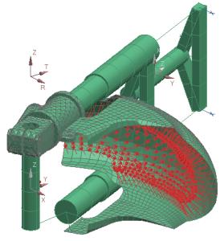

查看导入的模型
导入完成后，信息窗口中将会显示导入数据的汇总信息：
-
导入分析部分将列出各个 NX Nastran 卡识别的信息，以及导入到各个卡中的实体数量
-
导入汇总部分将列出节点、坐标系、约束、单元、物理属性、材料、载荷以及建模对象的数量
已经创建仿真文件，载荷和约束条件都已导入，所有刚体单元以及梁单元也被导入。
 信息窗口
信息窗口
新建的仿真文件应该显示在 NX 中。
-
 适合窗口(视图工具条)
适合窗口(视图工具条)
-
 保存(标准工具条)
保存(标准工具条)
